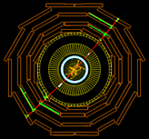

){kind=link}

Scientists often represent their data graphically . .
You have already learned about particles that interact with the CMS detector. Physicists call the interaction an event. How do these events appear in the data displays?
|  | Single event displays are a great way to take a look. Click on this CMS single event to see more detail. |
Right away, you might wish for something simpler to get you oriented. Watch this screencast explaining single event displays from one of CMS' predecessor experiments, Delphi at the LEP collider. Then consider the implications of the greater collision energies at the LHC: the Z decay products do not seem to be back-to-back, nor are they the only collision products in the event, as you can see in the image above. In the next milestone, we'll consider why the greater collision energies at the LHC produce more complicated events, but for now now, just recognize that they are more complex.
Now, it's your turn to identify CMS events!
Next, interact with CMS events in 3-D! They are a bit more complex, but they help you get better oriented to the whole detector and the particles it detects.
Answer these questions in your logbook:
To Learn More:
Event Displays - from Hands on CERN
Delphi Animation - from Hands On CERN